Concept : What is dream world?
The concept of the "Dream World" refers to a realm existing apart from our waking reality—a place where the boundaries of time, space, and logic appear fluid and malleable. It is a domain where the subconscious manifests its deepest, most hidden desires, fears, and fantasies—often in vivid, visceral forms that border on the surreal. Thus, within the landscape of my own dreams, all beings other than humans appear colossal, while humanity itself is rendered diminutive. Here, there are no bustling cities; instead, there lies a world of untamed, primal nature—where vegetation grows to monumental proportions and bursts with vibrant color, where stones hang suspended in mid-air, and where everything exudes an air of sheer wildness.
In this world, all artifacts of human creation have been abandoned, and humanity derives its vital energy for survival directly from the flora and fauna. Sunlight is absent; the sky is a dreamlike expanse of shimmering auroras, framed by encircling mountains—distant, snow-capped peaks that imbue the entire environment with an atmosphere of coolness, rationality, and detachment.
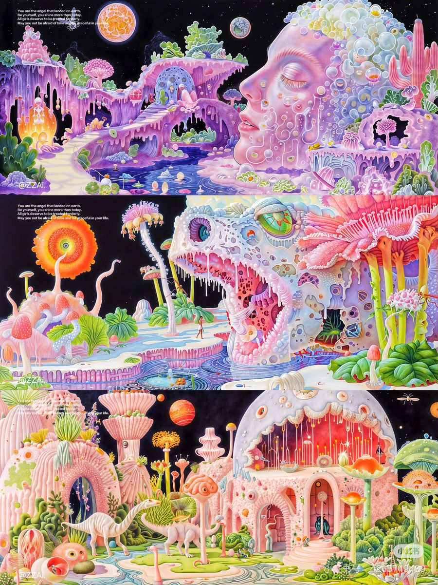
Process : build the dream world
The process of building the basic terrain for the dream world involved several key steps. First, I began by conceptualizing the overall aesthetic and atmosphere of the terrain, drawing inspiration from surreal landscapes and fantastical environments. Next, I created a rough sketch of the terrain layout, including key features such as mountains, valleys, rivers, and other natural formations. After finalizing the sketch, I moved on to 3D modeling software to start constructing the terrain in a digital environment. I used various tools and techniques to sculpt the terrain, adding details such as textures, colors, and lighting to enhance the visual appeal. Finally, I refined the terrain by iterating on the design and making adjustments based on feedback and my own creative vision until I achieved the desired look for the dream world.
Scene References
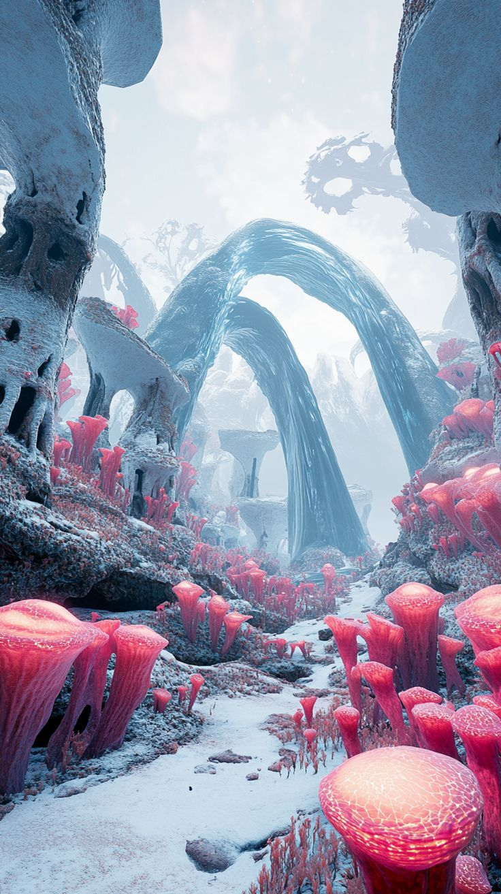
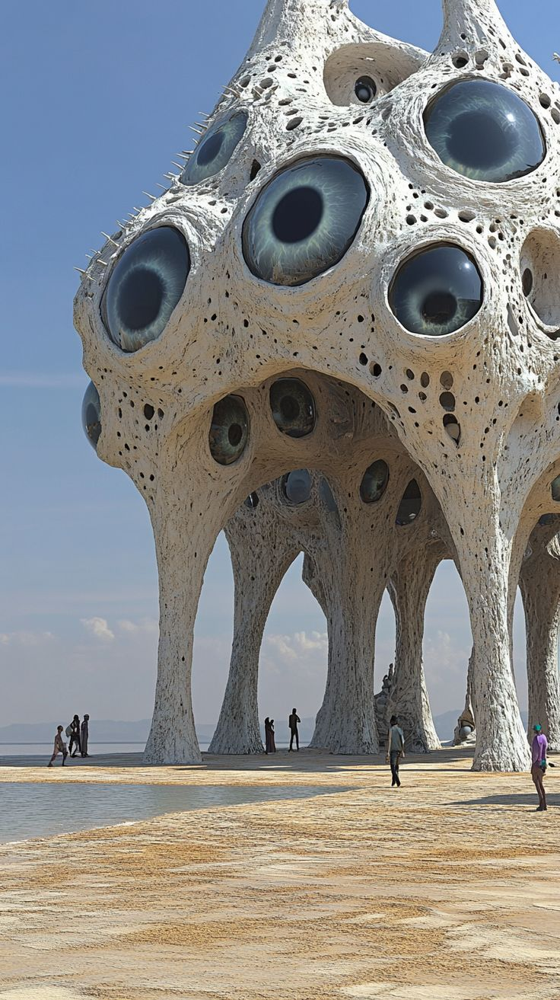
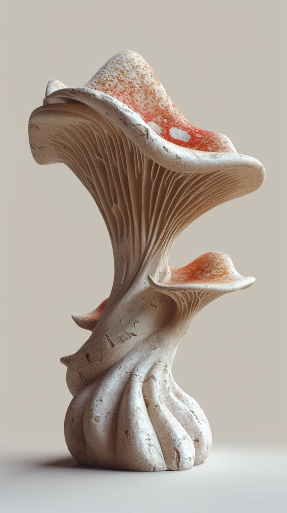
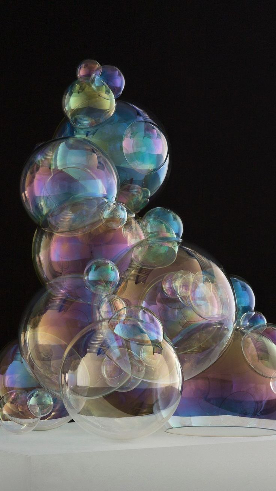
Game References
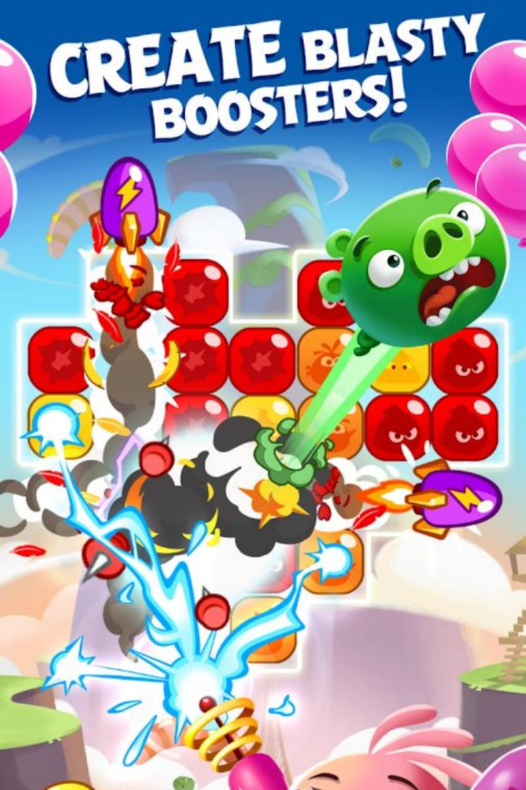
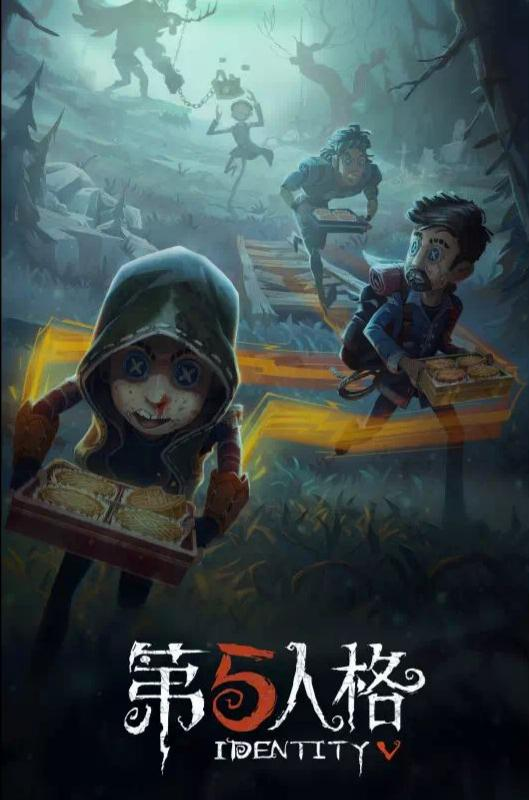
Key steps in the building the world included:
- 1.Setting the terrain and environment:
- 2.Adding skeletal details:
- 3.Decoration: Adding decorative elements to enhance the visual appeal and thematic consistency of the world.
- 4.Setting the sample game: Adding intricate details to the exterior of the heart, such as simulating uneven outer surface lines, to enhance realism.
- 5.UI system:
The terrain and environment of the dream world were designed to create a surreal and immersive experience for players. The terrain features a mix of organic and fantastical elements, such as towering mountains, winding rivers, and lush forests that blend seamlessly with futuristic structures and technology. The environment is filled with vibrant colors, dynamic lighting, and atmospheric effects that enhance the sense of wonder and mystery. The design of the terrain and environment was carefully crafted to evoke a sense of exploration and discovery, encouraging players to venture into the unknown and uncover the secrets hidden within the dream world.
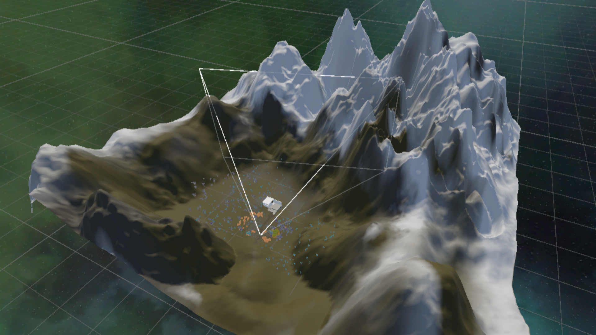
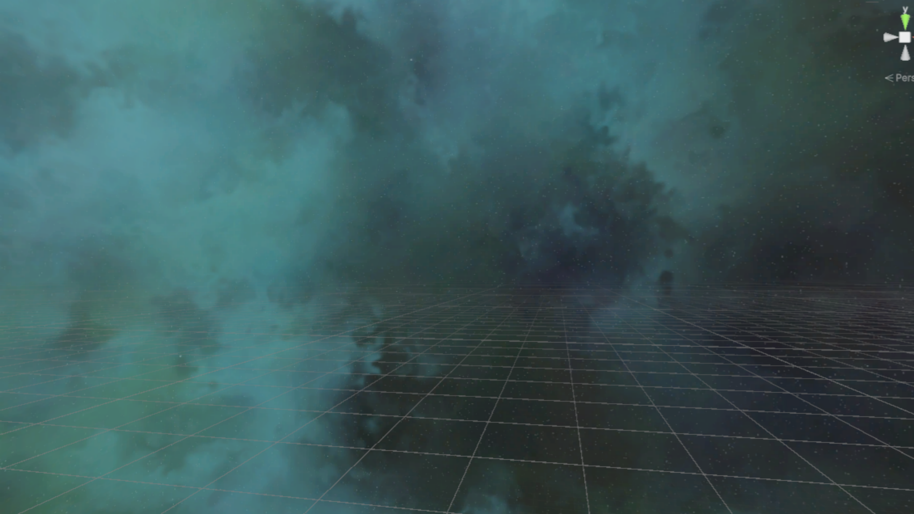
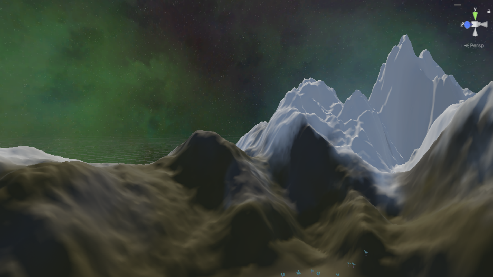
The skeletal details of the dream world were designed to add a sense of mystery and intrigue to the environment. These details include intricate structures and formations that resemble bones, skulls, and other skeletal elements, which are integrated into the terrain and architecture of the world. The skeletal details serve as visual cues that hint at the history and lore of the dream world, suggesting a past filled with ancient creatures, forgotten civilizations, and hidden secrets. By incorporating these skeletal details, the dream world takes on a more immersive and captivating atmosphere, inviting players to explore and uncover the stories behind these enigmatic structures.

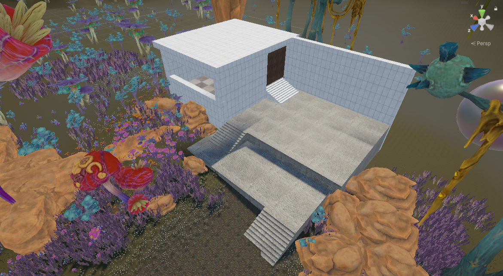
The decorative elements of the dream world were carefully chosen to enhance the visual appeal and thematic consistency of the environment. These elements include fantastical plants, glowing mushrooms, floating bubbles, and other whimsical details that contribute to the surreal and enchanting atmosphere of the world. The decorations were designed to complement the overall aesthetic of the terrain and environment, creating a cohesive and immersive experience for players. By adding these decorative elements, the dream world becomes a vibrant and captivating space that invites exploration and sparks the imagination.

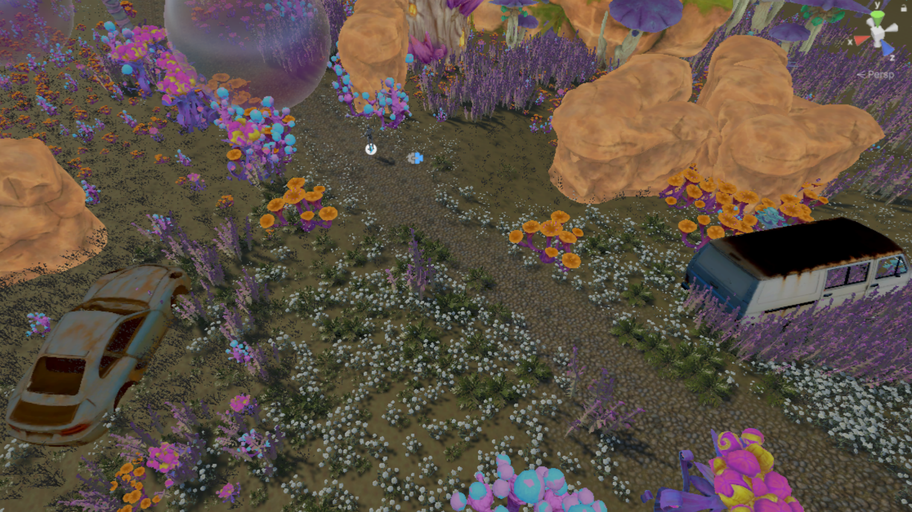
The sample game is set in a futuristic world where players can explore a symbiotic heart that is powered by plant energy. The heart is a massive structure that serves as the central hub of the game, and players can navigate through its various chambers and corridors to uncover its secrets. The heart is surrounded by a skeletal structure that provides support and protection, while also serving as a visual representation of the fusion between biology and technology. As players explore the heart, they will encounter various challenges and puzzles that require them to interact with the environment and utilize their skills to progress. The game aims to create an immersive experience that combines elements of science fiction, fantasy, and adventure, while also exploring themes of symbiosis, sustainability, and the potential of future technology.

The UI system of the dream world game is designed to provide players with an intuitive and immersive interface for navigating the game's mechanics and features. The UI includes elements such as health bars, inventory screens, and interactive prompts that allow players to manage their resources, track their progress, and interact with the environment. The design of the UI is consistent with the overall aesthetic of the game, featuring a futuristic and organic style that complements the surreal nature of the dream world. The UI system is also designed to be responsive and adaptive, providing players with a seamless experience as they explore the various chambers and corridors of the symbiotic heart.

Result : Game-Creatures
The final 3D model of the future symbiotic heart is a visually striking and conceptually rich representation of a futuristic organ that embodies the fusion of biology and technology. The model features a transparent glass heart encased within an intricate skeletal structure, with organic textures and details that evoke a sense of life and vitality. The heart's internal organs are energized by plant energy, creating a dynamic interplay between the synthetic and the natural. This artifact serves as a compelling exploration of the possibilities of future symbiotic technology and its potential impact on human biology.